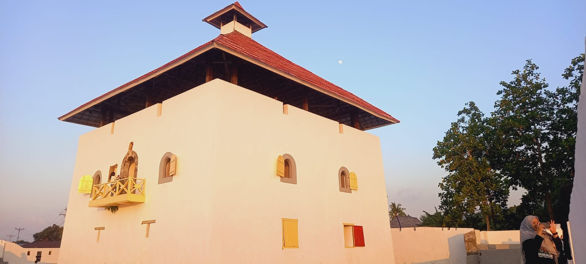
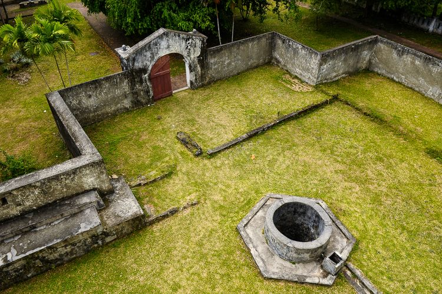
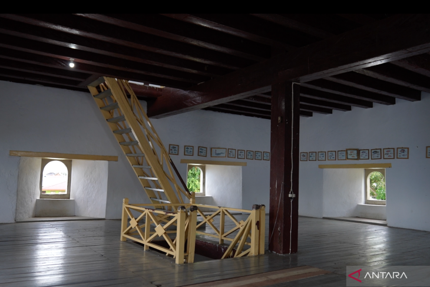

Sejarah & Pendirian Benteng
Awalnya dibangun oleh tentara Portugis pada tahun 1512 sebagai Loji penyimpanan cengkeh. Pada tahun 1605 beralih ke VOC Belanda dan resmi bernama Benteng Amsterdam pada tahun 1649.
Lihat GaleriSitus Wisata Sejarah & Budaya Negeri Hila

Awalnya dibangun oleh tentara Portugis pada tahun 1512 sebagai Loji penyimpanan cengkeh. Pada tahun 1605 beralih ke VOC Belanda dan resmi bernama Benteng Amsterdam pada tahun 1649.
Lihat Galeri
Bangunan utama berbentuk rumah 3 lantai: lantai 1 gudang senjata & serdadu, lantai 2 kediaman perwira, dan lantai 3 menara pengintai menghadap laut lepas.
Tonton Video



Menelusuri setiap sudut area benteng bersejarah dan merasakan suasana peninggalan masa lalu.

Melihat keindahan pemandangan laut lepas pesisir Pulau Ambon langsung dari atas menara pengintai.

Mempelajari rekam jejak peristiwa bersejarah dan koleksi informasi penting melalui pameran.
Benteng Amsterdam terletak di Desa Hila, Kecamatan Leihitu, Kabupaten Maluku Tengah (42 km dari pusat Kota Ambon).
📍 Alamat: Negeri Hila, Kec. Leihitu, Maluku Tengah
⏱️ Waktu Tempuh: ± 60 menit dari Kota Ambon
🚗 Transportasi: Kendaraan pribadi / umum
| Jam Kunjungan | 08:00 - 17:00 WIT Setiap Hari |
|---|---|
| Tiket Masuk | Gratis (Mengisi buku tamu) |
| Fasilitas | Bangunan 3 Lantai, Menara, Area Parkir |